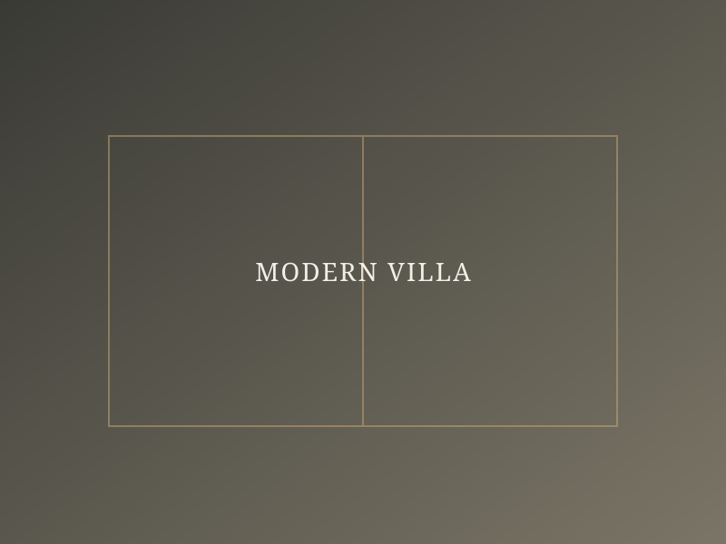
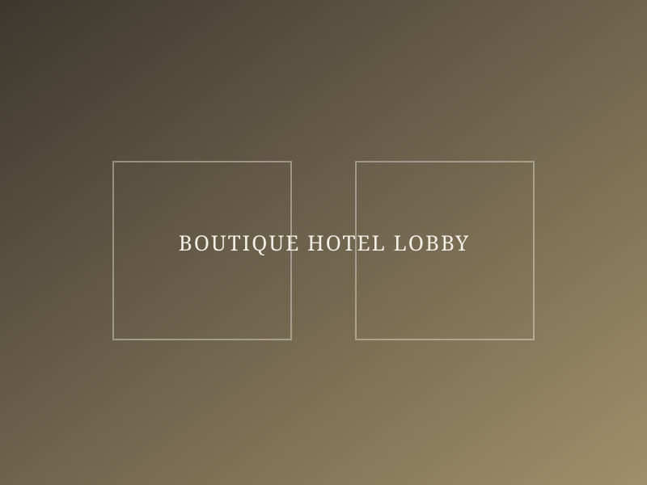
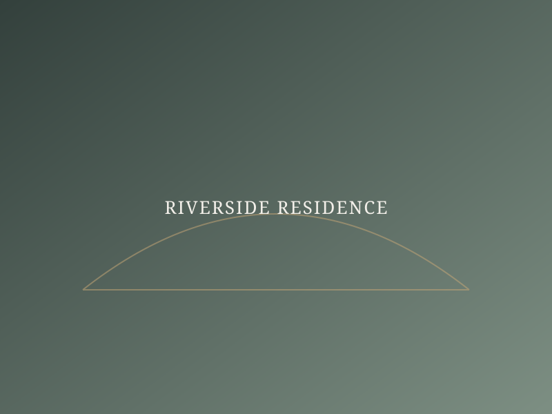
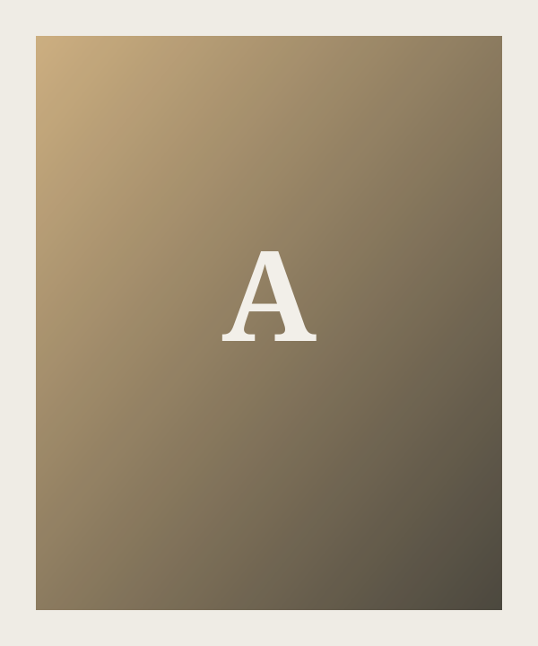

Architecture & Interiors — Mumbai
Designing Spaces That Inspire
A Mumbai-based studio shaping homes, workplaces and public rooms that hold light, weather and the lives lived inside them.
12+
Years Experience
80+
Projects Completed
25+
Awards & Features
98%
Client Satisfaction
Selected Work
Projects






The Architect
Hi, I'm Anjali
I'm an architect and interior designer based in Mumbai. I design homes, workplaces and public rooms that balance form, function and feeling — spaces shaped by their site, their light and the people who will use them every day.
After training in architecture and several years on hospitality projects across India and Southeast Asia, I founded Anjali Design Studio in 2014. For more than a decade I've worked alongside clients, contractors and craftspeople to turn ideas into built spaces that last.
The studio's work has been published and awarded widely, but the measure I care about is simpler: whether a client still loves the space five years on.
— Anjali, Principal Architect
Let's Work Together
What I Do
Services
Architectural Design
From first sketch to construction drawings: new-build homes, workplaces and public buildings shaped by site, climate and the way people will actually use them.
Interior Design
Space planning, material palettes and bespoke joinery that carry the architecture inside, so rooms feel settled rather than decorated.
3D Visualization
Daylight studies, photoreal renders and walkthroughs that let you stand inside a design and make decisions before a single wall goes up.
Space Planning
Layouts that recover wasted area, improve flow and light, and future-proof a plan for how it will be lived in ten years from now.
How I Work
Design Process
Discover
We begin with a site visit and a long conversation. I want to understand how you live or work, what the land and light are doing, and what the budget can honestly carry.
Design
Hand sketches become plans, models and material boards. We test options together until the scheme feels inevitable, then I lock the details and drawings.
Develop
Permits, tender and construction. I stay close to the site, working with trusted contractors and craftspeople so that what is drawn is what gets built.
Deliver
A final walkthrough, styling, snagging and handover — then a visit a year later, because a building is only finished once it has been lived in.
Client Words
Testimonials
Anjali listened more than she spoke, and then drew exactly the house we hadn't been able to describe. Two monsoons later it still surprises us.
She treated our old godown with real respect. Nothing feels forced; the new steel and the old brick seem to have always lived together.
The office changed how our team works. People stay late because they want to, not because they have to. That is a design result, not a culture one.
Guests comment on the lobby before they have even checked in. It set the tone for the whole hotel, and for how we talk about ourselves.
Get In Touch
Let's Start a Project
Have a plot, a plan or a half-formed idea? Tell me a little about it and I'll reply within two working days.
- Emailhello@anjalidesign.com
- Phone+91 98765 43210
- StudioMumbai, India